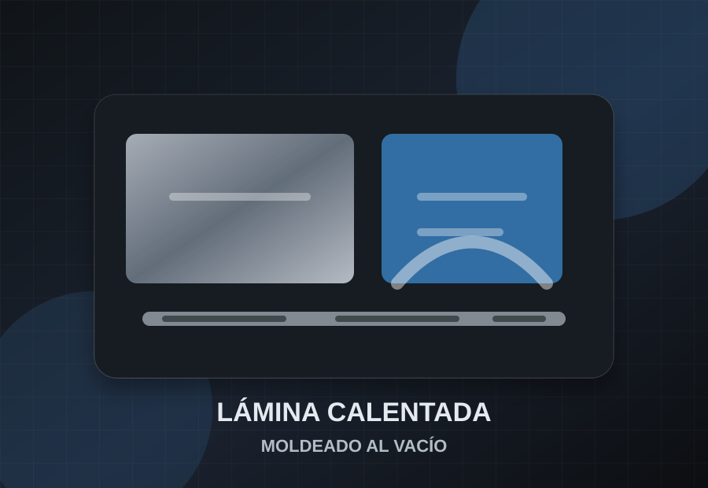

Proceso de termoformado
- Se selecciona el material y espesor de acuerdo con uso, resistencia, acabado y presupuesto.
- La lámina se calienta de forma controlada hasta lograr la maleabilidad necesaria.
- El material se forma sobre un molde mediante vacío, presión o apoyo mecánico.
- La pieza se enfría, se recorta, se perfora y se prepara para su acabado final.